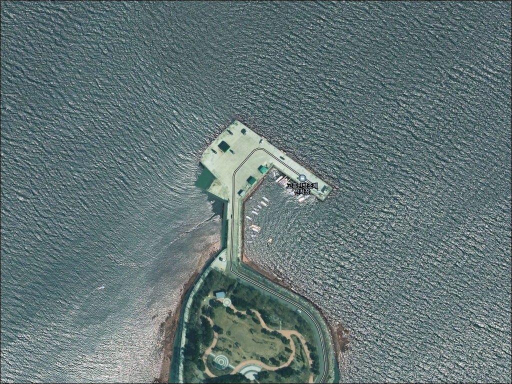
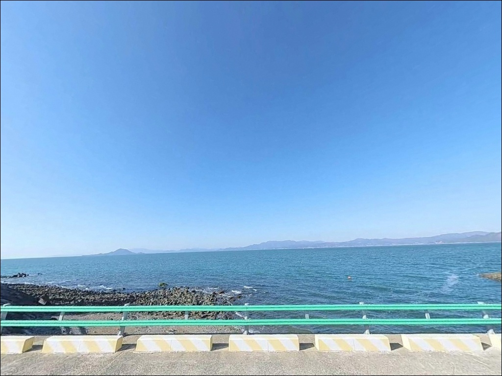
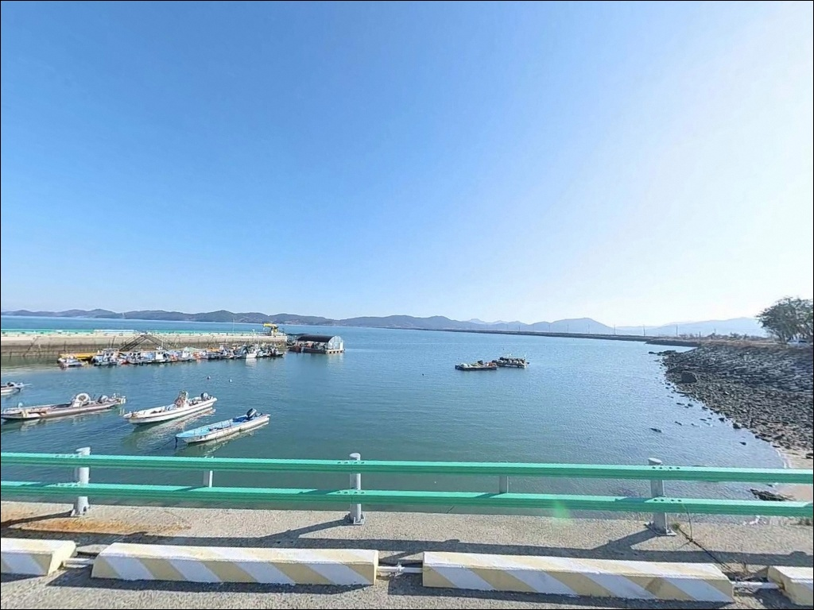
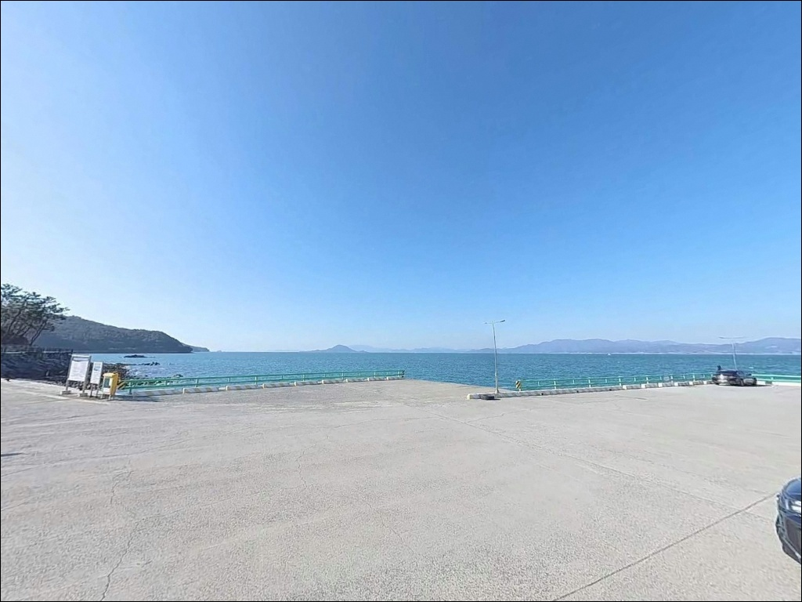
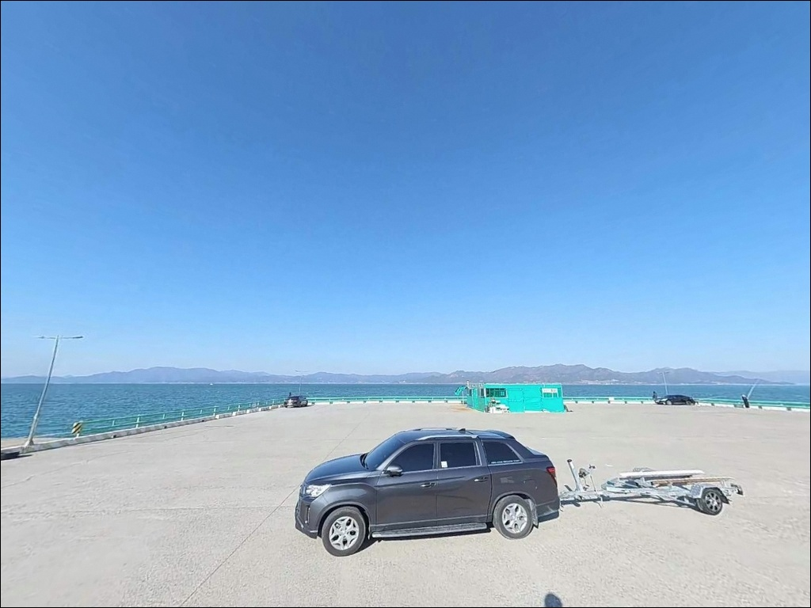
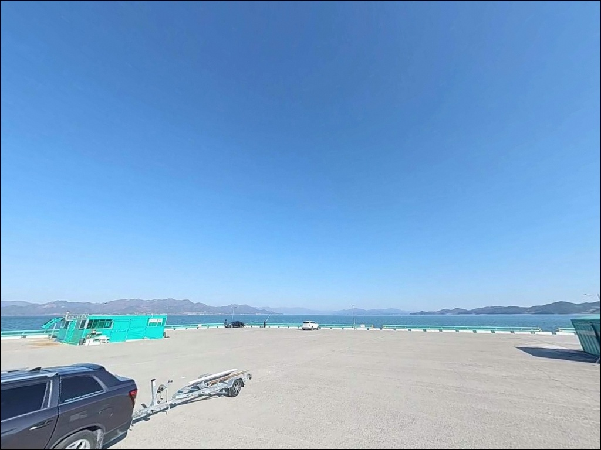
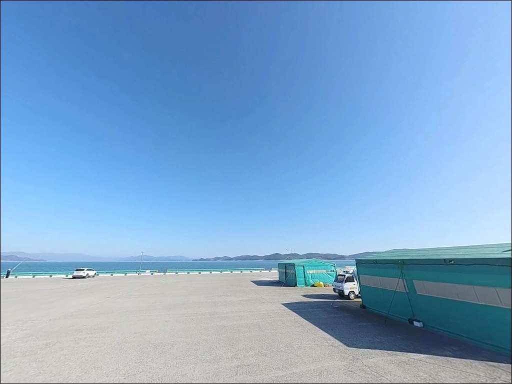
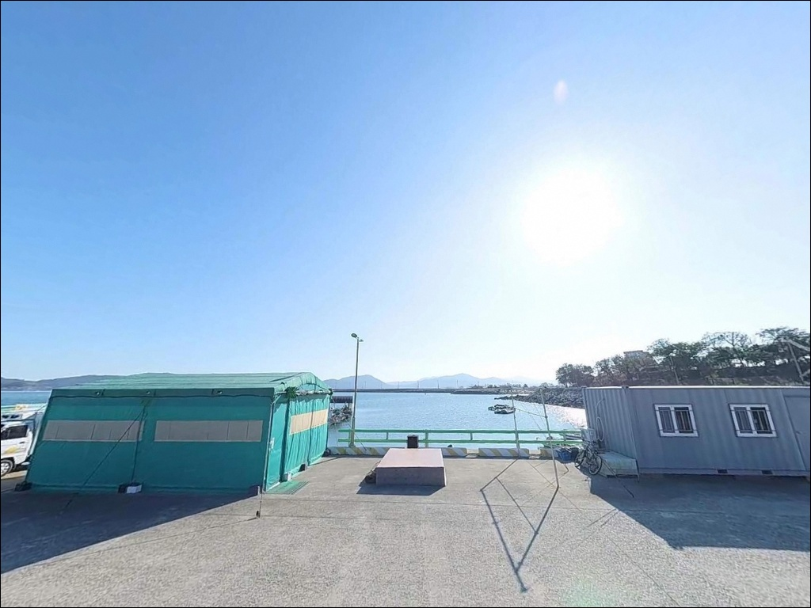
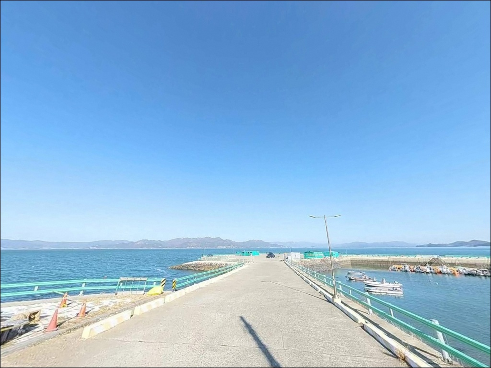

간조 때 수심 빠지는 고흥만방조제 용동항 들물 전후에 자리가 나온다
이 페이지에는 광고(제휴 링크 포함)가 있으며, 광고 링크를 통해 구매하면 운영자가 판매 수익 또는 수수료를 받을 수 있습니다. 포인트 사진: 카카오맵 스카이뷰·로드뷰. 이 페이지의 지도·사진 이미지는 카카오맵의 실제 서비스 이미지와 다를 수 있습니다.


포인트 안내
용동항(고흥만방조제 선착장)
전남 고흥군 도덕면 용동리 1451
고흥만방조제 선착장은 방조제 구조에 따라
간조 타이밍에 수심이 빠르게 얕아집니다.
물때를 확인하지 않고 도착하면
낚시 공간이 절반 이하로 줄어드는
상황을 맞닥뜨릴 수 있습니다.
이 포인트에서 들물 전후 타이밍은
선택이 아닌 필수 기준입니다.
전남 고흥군 도덕면 용동리,
고흥만방조제 남단 끝에 위치한 용동항은
득량만 내만과 맞닿은 구조입니다.
방조제 내측에는 수변공원이 조성되어 있고,
외측이 낚시 공간으로 열려 있습니다.
봄철 학꽁치 찌낚시 포인트로
이 일대에서 꾸준히 이름을 올리는 곳입니다.
이 글은 용동항의 진입 동선,
차박 체류 여건, 물때 판단 기준,
낚시 스타일별 공략 조건에 집중합니다.
조황 단정이나 특정 어종 보장은
이 글의 범위에 포함되지 않습니다.

1. 진입 동선과 포인트 접근성
고흥만방조제는 도덕면 용동리와
두원면 풍류리를 연결하는
총 2.8km의 직선 방조제입니다.
방조제 위를 지나는 고흥만로는
2차선 포장도로로 급경사 구간이 없어
승용차부터 대형 SUV, 캠핑카까지
진입에 어려움이 없는 구조입니다.
용동리 남단 선착장 구간은
방조제 끝부분에서 직접 이어집니다.
선착장 앞 공원 주차장에서 회차가 가능하고,
방조제 도로 갓길 라인과
선착장 인접 공터도
주차 후보로 활용할 수 있습니다.
별도 도보 이동 없이
차에서 내려 바로 낚시 자리를 잡는
구조입니다.
선착장 발판은 콘크리트 상판으로
평탄한 편이며,
외항 방향 석축 구간도
낚시 자리로 활용할 수 있습니다.
다만 석축 위 이동 시
발판이 고르지 않을 수 있으므로
야간에는 조명 확보가 먼저입니다.

2. 차박 환경과 야간 체류 여건
용동항 인근은 방조제 공원과
수변공원이 조성된 관광 정비 구역입니다.
공원 특성상 야간 가로등이 설치되어 있어
최소한의 시야가 확보되는 환경이며,
민가 밀집도가 낮아
프라이버시는 양호한 편입니다.
다만 방조제는 개방형 지형이라
바람 영향을 직접 받는 구조입니다.
특히 득량만 방향 서풍이 불 때는
방조제 외측에 파도 영향이 생기므로,
차박 전날 기상청 풍속 예보를
반드시 확인하는 것이 좋습니다.
바람이 강한 날은
방조제 위 야간 체류가 불편해집니다.
선착장 인근에는
고흥만 수변노을공원 오토캠핑장이
바로 인접해 있습니다.
샤워실과 화장실을 갖춘
90면 규모의 예약제 운영 시설이므로,
노지 차박 대신 편의시설이 필요하다면
사전 예약을 통해 활용하는 방법도 있습니다.
성수기 주말 예약률이 높으므로
미리 확인해 두는 것이 좋습니다.


3. 주변 편의시설 및 인프라 현황
용동리 내에 소규모 편의점이
지도에 등록되어 있습니다.
기본 음식료품과 간단한 낚시 소품은
이곳에서 보충할 수 있습니다.
방조제 주변에는 붕장어 숯불구이를
주 메뉴로 하는 식당이 운영 중인
지역이기도 합니다.
반경 10km 이내로 이동하면
고흥의 대표 어항인 녹동항이 있습니다.
CU 녹동신항점이 24시간 운영하며,
이마트24 녹동점도 인접해 있어
식수·얼음·낚시 소품 등을
녹동 방면에서 완비하고
출발하는 동선이 효율적입니다.
화장실은 선착장 인근
고흥만방조제공원 구역 내
공중화장실을 이용하는 구조입니다.
낚시 전 위치를 먼저 파악해 두면
야간 체류 시 불편함을 줄일 수 있습니다.

4. 물때 맞추지 않으면 채비만 던지다 옵니다
용동항 방문 전 가장 먼저 확인할 사항은
물때입니다.
방조제 구조의 내만형 포인트는
간조 시 수심이 급감하는 구간이 생겨
낚시 공간 자체가 줄어듭니다.
들물 전후 2~3시간을 중심으로
출조 시각을 맞추는 것이
이 포인트의 기본 판단 기준입니다.
득량만 방면의 서풍이 강한 날은
방조제 외측 파도 영향을 받을 수 있습니다.
기상청 해상예보 풍속 항목을
출발 전 다시 한번 확인하는 것이
헛걸음을 막는 조건입니다.
방조제 주변 양식장 구역이 분포하므로
양식 부표 방향 투척은 삼가야 합니다.
선착장 발판 끝 부분은
야간 시인성이 낮은 편입니다.
헤드랜턴과 구명조끼는
방문 시 기본 장비로 챙겨야 하며,
석축 위 이동 시에는
발판 상태를 먼저 확인하고 움직이는 것이
안전한 낚시의 기본입니다.

5. 지형 기반 낚시 여건 분석
고흥만방조제는 득량만을 향해 열린
2.8km 직선 구조 방조제입니다.
용동리 남단 선착장은
방조제 끝에서 외해 방향으로 열린 위치에 있어
득량만의 조류 흐름이
방조제 구조를 따라 모여드는 특성을 보입니다.
전체적으로 완만한 조류 흐름이며,
들물 타이밍에 흐름이 살아납니다.
수심은 만조 기준 1~2m 안팎으로
얕은 편입니다.
저질은 펄 위주로 형성되어 있으며,
선착장 끝부분과 수심 변화 구간이
상대적으로 유효한 낚시 자리입니다.
방조제 끝단과 선착장 측면에서
수심 급변 지점이 형성됩니다.
이 일대 득량만 해역에서
기대해 볼 수 있는 어종은
학꽁치, 숭어, 붕장어, 감성돔(소형),
갑오징어, 문어 등입니다.
방조제 전체 구간에서
봄철 학꽁치 낚시로 이름이 알려진 지역입니다.
출조 전 최신 조황은
반드시 검색해 보시기 바랍니다.


6. 포인트에 어울리는 낚시 스타일
이 포인트에서 가장 잘 맞는 낚시는
찌낚시입니다.
방조제 외측을 향해 채비를 투척하는 형태로,
학꽁치·숭어 시즌에는
별도 갯바위 이동 없이
선착장 발판에서 직접 공략합니다.
4~5월 학꽁치 시즌이
이 방조제 전체에서 조과 집중도가
가장 높은 시기입니다.
원투낚시도 이 포인트 구조에
잘 맞는 스타일입니다.
펄 저질 구간이 넓은 내만형 지형은
붕장어·도다리 원투 공략에
기본 조건을 갖추고 있습니다.
멀리 던져 수심이 있는 구간을 탐색하는 방식이 유효하며,
들물 전후 조류가 살아날 때
채비 컨트롤이 수월해집니다.
루어낚시도 제한적으로 활용할 수 있습니다.
방조제 수문 주변이나
조류 흐름이 생기는 구간에서
갑오징어·낙지를 루어로 노리는 방식이
이 일대 전반에서 성행합니다.
미노우·지그헤드 위주로
선착장 외측 야간 탐색이
기본 공략 패턴입니다.

7. 대안 포인트와 플랜 B 동선
용동항 조류 여건이 맞지 않거나
선착장이 만원일 때는
방조제 반대편 끝
풍류선착장(두원면 풍류리)이
첫 번째 대안입니다.
같은 방조제 구조로 해역 조건을 공유하며,
이동 거리는 방조제 도로 기준
약 3km 수준입니다.
날씨가 나빠지거나 물때가 크게 어긋나면
약 10km 거리의 녹동항으로
이동하는 것이 현실적인 대안입니다.
녹동항은 고흥의 대표 어항으로
루어·찌낚시·선상낚시가 모두 가능하며,
인근에 낚시 용품점과 편의점도
갖춰져 있어
소품 보충과 포인트 이동을
동시에 해결할 수 있습니다.
같은 방조제 구간 내
금호선착장과 방조제 석축 구간도
조건에 따라 교대로 탐색할 수 있는
포인트입니다.
바람 방향이 바뀌는 날에는
방조제 어느 쪽 면을 활용할지
먼저 판단한 뒤 자리를 잡는 것이
효율적인 이동 동선입니다.

들물 타이밍을 알면
고흥만 방조제 낚시가 달라집니다
학꽁치·숭어 위주 찌낚시를 즐기거나
원투낚시로 붕장어를 노리는 낚시인에게
용동항 방조제 선착장은
지형 조건이 잘 맞는 구조입니다.
차에서 내려 바로 낚시 자리를 잡을 수 있고,
진입과 주차가 어렵지 않아
접근성 측면에서 특히 편리한 포인트입니다.
반면 물때 확인 없이 간조 시간대에 도착하면
수심이 빠져 채비를 던질 공간이
크게 줄어듭니다.
물때 확인, 풍속 확인, 자급 준비,
이 세 가지를 갖추고 간다면
봄 학꽁치 시즌을 비롯한
사계절 생활낚시 포인트로
충분히 활용할 수 있는 곳입니다.
방조제 공원 주차장에 차를 세우고
물때 맞춰 낚싯대를 드리운 뒤
하룻밤 머무는 여행이라면,
수변노을공원 오토캠핑장 예약 여부만
미리 확인해두면
낚시와 차박을 함께 즐기기에
나쁘지 않은 출조 코스입니다.